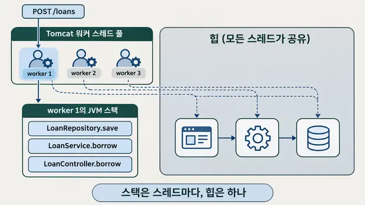
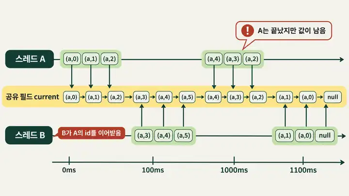
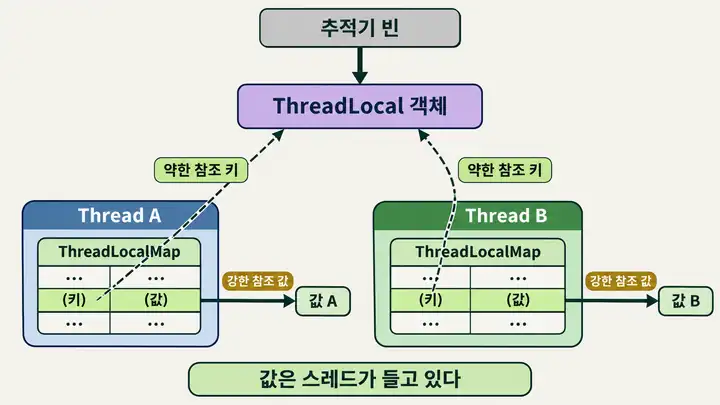
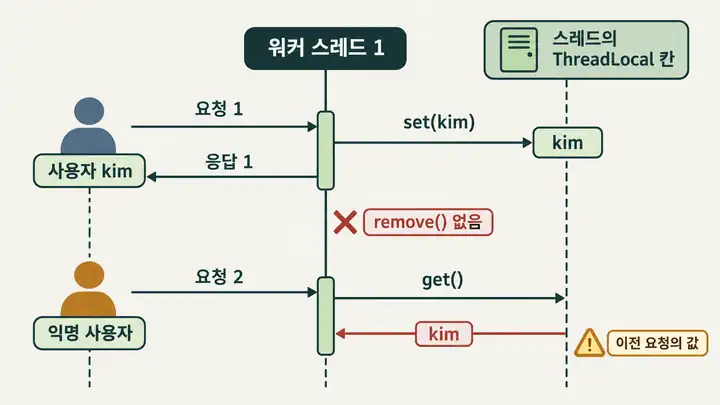

스프링 핵심 원리 고급편 / 01회
예제 만들기와 쓰레드 로컬 — ThreadLocal
요청 하나의 호출 흐름을 로그로 묶는 추적기를 직접 만들며, 싱글톤 필드에서 요청끼리 값이 섞이는 이유와 ThreadLocal이 값을 스레드 안에 두는 구조, 스레드 풀에서 값이 새는 과정까지 내려가 본다.
오늘 끝나면 할 수 있는 것
- 세 계층 예제에 로그 추적기를 붙이고, 요청 ID와 호출 깊이를 맞추는 세 가지 방법(매개변수 전달, 필드 보관, ThreadLocal 보관)의 차이를 코드와 실행 결과로 설명할 수 있다.
- 싱글톤 빈의 필드를 두 요청 스레드가 함께 쓸 때 로그가 섞이는 과정을 필드 값의 시간표로 추적하고, JVM 스택과 힙의 구분과 JLS의 공유 변수 정의로 원인을 설명할 수 있다.
ThreadLocal의get·set·remove가Thread.threadLocals의ThreadLocalMap을 거쳐 값을 찾는 경로를 그리고, 약한 참조 키와 강한 참조 값이 만드는 결과를 설명할 수 있다.- 스레드 풀에서
remove()를 빠뜨렸을 때 이전 요청의 값이 다음 요청에 보이는 과정을 재현하고, 요청 경계의finally에서 정리해야 하는 이유와 스프링이 같은 일을 하는 위치를 짚을 수 있다. - 작업을 다른 스레드로 넘길 때 ThreadLocal 값이 따라가지 않는 이유와,
InheritableThreadLocal이 스레드 풀에서 기대대로 동작하지 않는 이유를 설명할 수 있다.
핵심 강의 → 핵심 요약 → 실무 재판단 → 적용 연습 → 이해 확인
01 핵심 강의
이 강의의 차례 · 소제목 14개
- 로그 추적기라는 핑계
- V0: 세 계층으로 된 도서 대출 예제
- 요구사항 분석: 추적기가 해야 할 일
- V1: 프로토타입 — 키, 스코프, 추적기
- V1 적용: try/catch와 예외를 그대로 다시 던지는 이유
- V2: 매개변수로 키를 넘긴다
- 필드 동기화: 추적기가 현재 키를 기억한다
- 두 요청이 겹치면: 필드 동기화의 동시성 문제
- 동시성 문제를 작은 예제로 다시 보기
- ThreadLocal: 스레드마다 따로 보이는 변수
- ThreadLocal 안쪽: 값은 스레드가 들고 있다
- 쓰레드 로컬 동기화: ThreadLocalCallTracer
- 쓰레드 로컬 주의사항
- 정리: 세 가지 동기화 방식
로그 추적기라는 핑계
운영 중인 서비스에 "도서 대출 신청이 가끔 몇 초씩 걸린다"는 제보가 들어왔다고 하자. 컨트롤러가 느린지, 서비스의 계산이 느린지, 데이터베이스에 다녀오는 데 오래 걸리는지 지금의 로그로는 알 수 없다. 예외로 끝난 요청이 있다면 그 예외가 어느 계층에서 처음 터졌는지도 알고 싶다. 필요한 것은 요청 하나가 거쳐 간 메서드 호출을 순서대로, 호출 깊이와 소요 시간을 붙여 보여 주는 로그다.
이런 로그는 어느 한 기능에 속하지 않는다. 대출에도, 반납에도, 회원 가입에도 똑같은 모양으로 필요하다. 여러 기능을 가로질러 공통으로 필요한 이런 관심사를 횡단 관심사(cross-cutting concern)라고 부른다. 이 권은 처음부터 끝까지 로그 추적기 하나를 붙들고 간다. 추적기를 직접 만들고, 만든 추적기가 일으키는 문제를 하나씩 풀다 보면 프록시와 스프링 AOP가 왜 그런 모양인지가 자연스럽게 드러나기 때문이다.
추적기를 만들면 두 가지 문제가 차례로 나온다. 첫째는 문맥 전달 문제다. 컨트롤러, 서비스, 리포지토리가 각자 남긴 로그가 같은 요청에 속한다는 것을 어떻게 표시하고, 몇 번째 깊이의 호출인지를 어떻게 알려 줄 것인가. 둘째는 코드 침투 문제다. 모든 메서드에 시작·종료·예외 로그를 남기는 코드가 비즈니스 로직보다 길어진다. 이 회차는 첫째 문제를 풀고, 그 과정에서 만나는 스레드 공유 문제를 ThreadLocal로 해결한다. 둘째 문제는 02회의 템플릿 메서드·콜백 패턴, 03~06회의 프록시와 빈 후처리기, 07~10회의 스프링 AOP가 차례로 줄여 나간다.
실습 프로젝트 만들기
이 회차의 코드는 Spring Boot 3.x와 Java 21을 기준으로 한다. 의존성은 웹 하나면 충분하다. 아래 build.gradle은 이 글을 쓰며 확인한 3.5 계열 버전을 적은 것이고, 같은 3.x의 다른 패치 버전을 써도 이 회차의 내용은 달라지지 않는다. 롬복(Lombok)은 일부러 쓰지 않는다. 생성자와 필드가 코드에 그대로 보여야 무엇이 어디에 저장되는지 따라가기 쉽기 때문이다.
plugins {
id 'java'
id 'org.springframework.boot' version '3.5.16'
id 'io.spring.dependency-management' version '1.1.7'
}
group = 'hello'
version = '0.0.1-SNAPSHOT'
java {
toolchain {
languageVersion = JavaLanguageVersion.of(21)
}
}
repositories {
mavenCentral()
}
dependencies {
implementation 'org.springframework.boot:spring-boot-starter-web'
testImplementation 'org.springframework.boot:spring-boot-starter-test'
testRuntimeOnly 'org.junit.platform:junit-platform-launcher'
}
tasks.named('test') {
useJUnitPlatform()
}spring-boot-starter-web 3.5.16의 POM을 열어 보면 spring-boot-starter, spring-boot-starter-json, spring-boot-starter-tomcat, spring-web, spring-webmvc를 끌어온다. 그리고 spring-boot-starter가 다시 spring-boot-starter-logging을 끌어오므로, 따로 설정하지 않아도 SLF4J API와 Logback으로 로그를 남길 수 있다. 내장 톰캣도 이 경로로 들어온다. 이 사실이 뒤에서 중요해진다. 우리 코드는 톰캣이 만든 스레드 위에서 실행되기 때문이다.
package hello;
import org.springframework.boot.SpringApplication;
import org.springframework.boot.autoconfigure.SpringBootApplication;
@SpringBootApplication
public class AdvancedApplication {
public static void main(String[] args) {
SpringApplication.run(AdvancedApplication.class, args);
}
}V0: 세 계층으로 된 도서 대출 예제
추적기를 붙일 대상부터 만든다. 도서 ID를 받아 대출을 기록하는 단순한 흐름이다. 컨트롤러가 요청을 받고, 서비스가 업무 흐름을 맡고, 리포지토리가 저장을 맡는다. 실제 데이터베이스는 쓰지 않고, 저장에 1초가 걸린다고 가정해 Thread.sleep(1000)으로 흉내 낸다. 도서 ID가 lost이면 분실 처리된 책이라 대출할 수 없다며 예외를 던진다. 예외 경로를 추적하는 연습에 쓰려고 넣은 규칙이다.
package hello;
import org.springframework.stereotype.Repository;
@Repository
public class LoanRepository {
public void save(String bookId) {
if (bookId.equals("lost")) {
throw new IllegalStateException("분실 처리된 도서: " + bookId);
}
sleep(1000); // DB에 다녀오는 시간을 흉내 낸다
}
private void sleep(long millis) {
try {
Thread.sleep(millis);
} catch (InterruptedException e) {
Thread.currentThread().interrupt(); // 인터럽트 상태를 되살려 둔다
}
}
}package hello;
import org.springframework.stereotype.Service;
@Service
public class LoanService {
private final LoanRepository loanRepository;
public LoanService(LoanRepository loanRepository) {
this.loanRepository = loanRepository;
}
public void borrow(String bookId) {
loanRepository.save(bookId);
}
}package hello;
import org.springframework.web.bind.annotation.PostMapping;
import org.springframework.web.bind.annotation.RequestParam;
import org.springframework.web.bind.annotation.RestController;
@RestController
public class LoanController {
private final LoanService loanService;
public LoanController(LoanService loanService) {
this.loanService = loanService;
}
@PostMapping("/loans")
public String borrow(@RequestParam("bookId") String bookId) {
loanService.borrow(bookId);
return "ok";
}
}대출은 서버의 상태를 바꾸는 요청이므로 GET이 아니라 POST로 받았다. HTTP 시맨틱에서 GET은 안전한(safe) 메서드여서 서버 상태를 바꾸는 데 쓰지 않는다는 것을 HTTP 권에서 보았다. 브라우저 주소창으로는 POST를 보낼 수 없으니 터미널에서 curl로 호출한다. @RequestParam에 이름을 직접 적은 것은 컴파일러의 -parameters 옵션 여부와 상관없이 같은 결과를 얻기 위해서다.
curl -X POST "localhost:8080/loans?bookId=b-1" # 약 1초 뒤 ok
curl -X POST "localhost:8080/loans?bookId=lost" # 예외 → 500 응답요청 하나는 스레드 하나 위에서 실행된다
이 단순한 코드가 실행될 때 JVM 안에서 일어나는 일을 짚어 두자. 이 회차의 모든 문제가 여기서 출발한다. 내장 톰캣은 요청을 처리할 워커 스레드를 풀(pool)로 관리한다. Spring Boot 3.5.16의 ServerProperties 소스를 열어 보면 톰캣 워커 스레드의 최대 수(server.tomcat.threads.max) 기본값이 200, 최소 유지 수(server.tomcat.threads.min-spare) 기본값이 10으로 적혀 있다. 요청이 들어오면 풀의 스레드 하나가 그 요청을 맡아 서블릿 필터, DispatcherServlet, 컨트롤러, 서비스, 리포지토리를 차례로 호출하고, 응답을 쓴 뒤 풀로 돌아간다. 스레드는 요청이 끝나도 죽지 않고 다음 요청을 기다린다.
메서드를 호출할 때마다 JVM은 그 스레드의 JVM 스택(JVM stack)에 프레임(frame)을 하나 쌓는다. JVM 명세(JVMS §2.5.2)는 각 스레드가 자신만의 JVM 스택을 가지며 그 스택은 스레드와 함께 만들어진다고 정한다. 프레임에는 그 메서드의 지역 변수 배열과 피연산자 스택이 들어 있고(JVMS §2.6), 한 스레드가 만든 프레임은 다른 스레드가 참조할 수 없다. 반면 객체는 모두 힙(heap)에 만들어지고, 힙은 JVM의 모든 스레드가 공유한다(JVMS §2.5.3). 그러니 bookId 같은 매개변수와 지역 변수는 스레드마다 따로 있지만, LoanService 객체 자체는 힙에 하나 있고 모든 워커 스레드가 그 하나를 함께 쓴다. 스프링의 싱글톤 스코프는 빈 정의 하나에 객체 하나를 만들어 캐시에 두고, 그 빈을 요구하는 모든 곳에 같은 객체를 돌려준다(Spring Framework 레퍼런스, Bean Scopes).
Tomcat 워커 스레드 풀 (Boot 3.5 기본: 최대 200, 최소 유지 10)
┌──────────┐ ┌──────────┐ ┌──────────┐
│ worker 1 │ │ worker 2 │ │ worker 3 │ ...
└────┬─────┘ └──────────┘ └──────────┘
│ POST /loans?bookId=b-1 을 맡는다
▼
worker 1 의 JVM 스택 (위가 가장 최근 프레임)
┌────────────────────────────────────────┐
│ LoanRepository.save 지역: this, bookId │
│ LoanService.borrow 지역: this, bookId │
│ LoanController.borrow 지역: this, bookId │
│ ... 리플렉션 호출, DispatcherServlet ... │
│ ... 필터 체인, Tomcat 내부, run() │
└────────────────────────────────────────┘
힙 (모든 스레드가 공유)
LoanController 객체 ──▶ LoanService 객체 ──▶ LoanRepository 객체
(빈 정의마다 하나. worker 1, 2, 3 이 모두 같은 객체를 호출한다)

정리하면, 동기식 서블릿 모델에서 요청 하나의 처리는 처음부터 끝까지 한 스레드의 한 호출 스택 위에서 일어난다. 그리고 그 호출들이 지나가는 객체들은 다른 요청을 처리하는 스레드들과 함께 쓰는 공유 객체다. 이 두 문장을 기억하고 다음으로 넘어가자.
요구사항 분석: 추적기가 해야 할 일
만들 추적기의 요구사항을 먼저 적는다. 요구사항은 이 회차의 실습을 위해 직접 정한 것이다.
- 시작과 끝: 추적 대상 메서드가 시작할 때와 끝날 때 로그를 남긴다.
- 소요 시간: 끝날 때 그 메서드가 걸린 시간을 함께 남긴다.
- 정상과 예외의 구분: 예외로 끝났다면 끝 로그 대신 실패 로그를 남기고 예외 정보를 붙인다.
- 흐름 보존: 추적기 때문에 애플리케이션의 동작이 달라져서는 안 된다. 예외를 삼키거나 다른 예외로 바꾸지 않고 원래 예외를 그대로 내보낸다.
- 호출 깊이: 컨트롤러가 서비스를, 서비스가 리포지토리를 호출하는 깊이를 들여쓰기로 보여 준다.
- 요청 식별자: 같은 요청에서 나온 로그에는 같은 식별자를 붙여, 여러 요청의 로그가 한 파일에 섞여도 골라낼 수 있게 한다.
목표로 하는 출력은 다음과 같다. 대괄호 안이 요청 식별자이고, 들여쓰기 두 칸이 깊이 한 단계다. 로그 앞부분의 시각, 레벨, 스레드 이름, 로거 이름은 지면 관계로 지웠다.
[7c1e04ab] begin LoanController.borrow()
[7c1e04ab] begin LoanService.borrow()
[7c1e04ab] begin LoanRepository.save()
[7c1e04ab] end LoanRepository.save() (1002ms)
[7c1e04ab] end LoanService.borrow() (1003ms)
[7c1e04ab] end LoanController.borrow() (1004ms)
[2b9df310] begin LoanController.borrow()
[2b9df310] begin LoanService.borrow()
[2b9df310] begin LoanRepository.save()
[2b9df310] fail LoanRepository.save() (0ms) java.lang.IllegalStateException: 분실 처리된 도서: lost
[2b9df310] fail LoanService.borrow() (0ms) java.lang.IllegalStateException: 분실 처리된 도서: lost
[2b9df310] fail LoanController.borrow() (1ms) java.lang.IllegalStateException: 분실 처리된 도서: lost식별자와 밀리초 값은 실행할 때마다 다르다. 이 출력에서 눈여겨볼 것은 두 가지다. 하나는 여러 메서드의 로그가 하나의 식별자로 묶인다는 것이고, 다른 하나는 깊이가 호출 구조를 따라 늘었다 줄어든다는 것이다. 두 가지 모두 "지금 이 로그가 어느 요청의 몇 번째 깊이에 속하는가"라는 정보를 메서드 사이에 전달해야만 가능하다. 각 메서드는 자기가 누구에게 불렸는지 모르기 때문이다. 이 회차의 나머지는 그 정보를 어디에 두고 어떻게 넘길지를 놓고 세 가지 답을 차례로 시험하는 과정이다.
V1: 프로토타입 — 키, 스코프, 추적기
추적기가 다룰 데이터는 두 가지다. 하나는 "어느 요청의 몇 번째 깊이인가"를 나타내는 키이고, 다른 하나는 "어떤 메서드가 언제 시작했는가"를 기억했다가 끝날 때 시간을 계산하는 데 쓰는 스코프다. 키부터 만든다.
package hello.trace;
import java.util.UUID;
public final class TraceKey {
private final String id; // 한 요청의 로그를 묶는 식별자
private final int level; // 호출 깊이. 요청의 첫 메서드가 0
public TraceKey() {
this(UUID.randomUUID().toString().substring(0, 8), 0);
}
private TraceKey(String id, int level) {
this.id = id;
this.level = level;
}
public TraceKey child() {
return new TraceKey(id, level + 1);
}
public TraceKey parent() {
return new TraceKey(id, level - 1);
}
public boolean isRoot() {
return level == 0;
}
public String id() { return id; }
public int level() { return level; }
}TraceKey는 불변(immutable) 객체다. 필드가 모두 final이고, 깊이를 바꾸는 메서드는 자기 자신을 고치지 않고 새 객체를 돌려준다. 이렇게 만든 이유는 뒤에서 두 번 드러난다. 첫째, 스코프가 시작 시점의 키를 들고 있다가 끝 로그를 찍을 때 다시 쓰는데, 그 사이에 누가 키를 고쳐 버리면 끝 로그의 깊이가 틀어진다. 불변이면 그럴 일이 없다. 둘째, 불변 객체는 여러 스레드가 동시에 읽어도 안전하다. 문제가 되는 것은 언제나 "쓰기"이기 때문이다.
식별자는 UUID.randomUUID()로 만든 랜덤 UUID의 앞 8글자다. UUID 문자열은 16진수로 쓰이므로 8글자는 32비트에 해당한다. 버전 4 UUID에서 버전과 변형(variant)을 나타내는 고정 비트는 세 번째·네 번째 묶음에 있어 앞 8글자는 모두 랜덤 비트다. 32비트면 요청이 아주 많을 때 서로 다른 요청이 같은 식별자를 받을 수도 있다. 로그를 읽기 쉽게 하려는 학습용 절충이며, 실제 시스템이라면 더 긴 식별자를 쓴다.
package hello.trace;
public record TraceScope(TraceKey key, long startNanos, String message) {
}package hello.trace;
final class TraceFormat {
private TraceFormat() {
}
static String indent(int level) {
return " ".repeat(level);
}
static long elapsedMillis(TraceScope scope) {
return (System.nanoTime() - scope.startNanos()) / 1_000_000;
}
}시작 시각은 System.currentTimeMillis()가 아니라 System.nanoTime()으로 잰다. JDK 21의 System.nanoTime 문서는 이 메서드가 경과 시간을 재는 데만 쓸 수 있고 시스템 시각이나 벽시계 시각과는 관계가 없다고 적는다. 반대로 currentTimeMillis는 벽시계 시각이어서 실행 중에 시스템 시각이 조정되면 두 값의 차이가 실제 경과 시간과 달라질 수 있다. 간격을 잴 때는 간격용 시계를 쓰는 것이 맞다.
이제 추적기 본체다. 첫 버전은 키를 넘겨받는 방법이 없어서, begin을 부를 때마다 새 키를 만든다.
package hello.trace;
import org.slf4j.Logger;
import org.slf4j.LoggerFactory;
import org.springframework.stereotype.Component;
@Component
public class SimpleCallTracer {
private static final Logger log = LoggerFactory.getLogger(SimpleCallTracer.class);
public TraceScope begin(String message) {
TraceKey key = new TraceKey();
log.info("[{}] {}begin {}", key.id(), TraceFormat.indent(key.level()), message);
return new TraceScope(key, System.nanoTime(), message);
}
public void end(TraceScope scope) {
TraceKey key = scope.key();
log.info("[{}] {}end {} ({}ms)", key.id(), TraceFormat.indent(key.level()),
scope.message(), TraceFormat.elapsedMillis(scope));
}
public void fail(TraceScope scope, Exception e) {
if (scope == null) {
return; // begin 자체가 실패한 경우
}
TraceKey key = scope.key();
log.info("[{}] {}fail {} ({}ms) {}", key.id(), TraceFormat.indent(key.level()),
scope.message(), TraceFormat.elapsedMillis(scope), e.toString());
}
}SimpleCallTracer는 @Component로 등록하므로 스프링 컨테이너에 싱글톤 빈으로 하나 만들어진다. 이 첫 버전에는 필드에 상태가 없다. log는 static final이고 로거 객체 자체가 여러 스레드에서 쓰도록 만들어져 있으며, 키와 스코프는 모두 메서드 안에서 만들어 반환값으로 내보낸다. 그래서 이 객체를 여러 스레드가 동시에 호출해도 서로 간섭할 거리가 없다. 이 성질을 기억해 두자. 뒤에서 V2와 필드 버전을 거치며 이 성질을 잃었다가 되찾는 과정이 이 회차의 줄거리다.
V1 적용: try/catch와 예외를 그대로 다시 던지는 이유
추적기를 세 계층에 붙인다. 서비스만 보이고, 컨트롤러와 리포지토리도 같은 모양으로 고친다(리포지토리는 if와 sleep을 try 안에 넣는다).
@Service
public class LoanService {
private final LoanRepository loanRepository;
private final SimpleCallTracer tracer;
public LoanService(LoanRepository loanRepository, SimpleCallTracer tracer) {
this.loanRepository = loanRepository;
this.tracer = tracer;
}
public void borrow(String bookId) {
TraceScope scope = null;
try {
scope = tracer.begin("LoanService.borrow()");
loanRepository.save(bookId);
tracer.end(scope);
} catch (Exception e) {
tracer.fail(scope, e);
throw e;
}
}
}이 짧은 코드에는 요구사항을 지키기 위한 장치가 세 가지 들어 있다.
첫째, scope를 try 바깥에서 선언했다. 자바에서 블록 안에서 선언한 지역 변수의 유효 범위는 그 블록까지여서, try 블록 안에서 선언하면 catch 블록에서 보이지 않는다. 실패 로그를 찍으려면 시작 시각이 담긴 스코프가 필요하므로 바깥에 선언하고 null로 초기화했다. begin 자체가 예외를 던지면 scope는 null인 채로 catch에 들어오므로, fail은 null이면 아무것도 하지 않게 만들었다. 이 검사가 없으면 fail 안에서 NullPointerException이 나서 원래 예외를 덮어 버린다.
둘째, catch에서 예외를 기록한 뒤 throw e로 같은 예외 객체를 그대로 다시 던진다. 추적기는 관찰자여야 한다. 예외를 삼키면 컨트롤러는 실패한 대출을 성공으로 응답하고, 다른 예외로 감싸면 상위 계층의 예외 처리가 바뀐다. 같은 객체를 던지므로 스택 트레이스도 처음 던져진 지점의 것이 유지된다. 스택 트레이스는 예외 객체가 만들어질 때 채워지기 때문이다.
셋째, 이 메서드는 throws Exception을 선언하지 않았는데도 catch (Exception e) { throw e; }가 컴파일된다. Exception은 검사 예외(checked exception)인데 왜 그럴까. JLS §11.2.2는 catch 매개변수가 final이거나 사실상 final(effectively final)일 때, 그 매개변수를 던지는 throw 문이 던질 수 있는 예외를 "그 try 블록이 던질 수 있는 예외"로 좁혀 계산한다. 이 try 블록이 호출하는 begin, save, end는 검사 예외를 선언하지 않으므로, throw e가 던질 수 있는 것은 비검사 예외뿐이고 선언할 것이 없다. 반대로 try 블록 안에 Files.readString(path)처럼 IOException을 선언한 호출이 있으면, JDK 21의 javac는 throw e 줄에서 다음 오류를 낸다.
Rethrow.java:8: error: unreported exception IOException; must be caught or declared to be thrown
throw e;
^즉 이 관용구는 원래 메서드의 예외 선언을 넓히지도 좁히지도 않는다. 원래 메서드가 검사 예외를 던졌다면 여전히 선언해야 하고, 던지지 않았다면 여전히 선언할 필요가 없다. 추적기가 메서드 시그니처를 바꾸지 않는다는 것은 "흐름 보존" 요구사항의 일부다. 참고로 catch (Exception e)는 Error를 잡지 않는다. OutOfMemoryError 같은 오류가 나면 실패 로그는 남지 않고 오류는 그대로 올라간다. 이 회차에서는 그 동작을 받아들인다.
컴파일된 결과를 javap -c -p로 열어 보면 이 구조가 바이트코드로 어떻게 표현되는지 보인다.
public void borrow(java.lang.String);
Code:
0: aconst_null
1: astore_2 // scope = null (지역 변수 슬롯 2)
2: aload_0
3: getfield #13 // Field tracer
6: ldc #17 // String LoanService.borrow()
8: invokeinterface #19, 2 // ...begin(String)
13: astore_2 // scope = begin(...)
14: aload_0
15: getfield #7 // Field loanRepository
18: aload_1 // bookId (매개변수 슬롯 1)
19: invokevirtual #25 // LoanRepository.save
22: aload_0
23: getfield #13 // Field tracer
26: aload_2
27: invokeinterface #31, 2 // ...end(TraceScope)
32: goto 49
35: astore_3 // 잡은 예외를 슬롯 3(e)에
36: aload_0
37: getfield #13 // Field tracer
40: aload_2
41: aload_3
42: invokeinterface #37, 3 // ...fail(TraceScope, Exception)
47: aload_3
48: athrow // 같은 예외 객체를 다시 던진다
49: return
Exception table:
from to target type
2 32 35 Class java/lang/Exception(이 목록은 뒤에서 만들 CallTracer 인터페이스를 주입받는 버전에서 뽑은 것이어서 invokeinterface가 보인다. 구체 클래스를 주입한 V1이라면 같은 자리에 invokevirtual이 온다.) try와 catch라는 문법은 바이트코드에 없다. 대신 메서드마다 예외 테이블(exception table)이 붙는다. "명령 2번부터 32번 직전까지 실행하다가 Exception이나 그 하위 타입이 던져지면 35번으로 가라"는 한 줄이 try와 catch의 전부다(JVMS §2.10). 35번에 도착하면 던져진 예외 객체가 피연산자 스택에 올라와 있고, astore_3이 그것을 지역 변수 슬롯 3에 담는다. 그리고 athrow가 그 객체를 다시 던진다.
이 목록에서 주목할 것이 하나 더 있다. scope는 슬롯 2, bookId는 슬롯 1, 예외는 슬롯 3이라는 지역 변수 배열에 들어간다. 이 배열은 현재 프레임의 것이고, 프레임은 이 메서드를 실행하는 스레드의 스택에 있다. 반면 tracer와 loanRepository는 getfield로 읽는다. 힙에 있는 LoanService 객체의 필드를 읽는다는 뜻이다. "스레드마다 따로인 것"과 "모두가 함께 쓰는 것"이 바이트코드에서는 aload/astore와 getfield/putfield라는 서로 다른 명령으로 갈린다.
V1을 실행하고 b-1을 한 번 대출하면 이렇게 나온다.
[1f0c3a7e] begin LoanController.borrow()
[9b22d415] begin LoanService.borrow()
[c07e8a01] begin LoanRepository.save()
[c07e8a01] end LoanRepository.save() (1003ms)
[9b22d415] end LoanService.borrow() (1004ms)
[1f0c3a7e] end LoanController.borrow() (1005ms)시작·끝·시간은 잘 나온다. 하지만 세 메서드가 각자 새 키를 만들었으니 식별자가 세 개이고 깊이도 모두 0이다. 동시에 다른 요청이 들어와 로그가 섞이면 어느 줄이 어느 요청의 것인지 가릴 수 없다. 요구사항 중 "호출 깊이"와 "요청 식별자"가 빠졌다. 이유는 분명하다. 서비스의 begin은 컨트롤러가 이미 만든 키를 알 방법이 없다.
V2: 매개변수로 키를 넘긴다
가장 직접적인 방법은 키를 매개변수로 넘기는 것이다. 추적기에 "부모 키를 받아 다음 깊이의 키로 시작하는" 메서드를 더한다.
// SimpleCallTracer에 추가
public TraceScope beginChild(TraceKey parentKey, String message) {
TraceKey key = parentKey.child();
log.info("[{}] {}begin {}", key.id(), TraceFormat.indent(key.level()), message);
return new TraceScope(key, System.nanoTime(), message);
}요청의 첫 메서드인 컨트롤러는 그대로 begin을 부르고, 자기 스코프의 키를 서비스에 넘긴다. 서비스와 리포지토리는 키를 받는 매개변수가 하나씩 늘어난다.
// LoanController.borrow
scope = tracer.begin("LoanController.borrow()");
loanService.borrow(scope.key(), bookId);
// LoanService
public void borrow(TraceKey parentKey, String bookId) {
TraceScope scope = null;
try {
scope = tracer.beginChild(parentKey, "LoanService.borrow()");
loanRepository.save(scope.key(), bookId);
tracer.end(scope);
} catch (Exception e) {
tracer.fail(scope, e);
throw e;
}
}
// LoanRepository
public void save(TraceKey parentKey, String bookId) {
TraceScope scope = null;
try {
scope = tracer.beginChild(parentKey, "LoanRepository.save()");
// ... 분실 도서 검사와 sleep(1000)
tracer.end(scope);
} catch (Exception e) {
tracer.fail(scope, e);
throw e;
}
}[5a0e77c2] begin LoanController.borrow()
[5a0e77c2] begin LoanService.borrow()
[5a0e77c2] begin LoanRepository.save()
[5a0e77c2] end LoanRepository.save() (1002ms)
[5a0e77c2] end LoanService.borrow() (1002ms)
[5a0e77c2] end LoanController.borrow() (1003ms)
[e31b9c04] begin LoanController.borrow()
[e31b9c04] begin LoanService.borrow()
[e31b9c04] begin LoanRepository.save()
[e31b9c04] fail LoanRepository.save() (0ms) java.lang.IllegalStateException: 분실 처리된 도서: lost
[e31b9c04] fail LoanService.borrow() (0ms) java.lang.IllegalStateException: 분실 처리된 도서: lost
[e31b9c04] fail LoanController.borrow() (0ms) java.lang.IllegalStateException: 분실 처리된 도서: lost요구사항이 모두 채워졌다. 예외는 리포지토리에서 한 번 던져졌지만 세 계층이 각자 잡아 실패 로그를 남기고 다시 던졌으므로 실패 로그가 깊은 곳부터 세 줄 나온다. 컨트롤러가 마지막으로 던진 예외는 처리할 곳이 없으므로 DispatcherServlet 밖으로 올라가고, 스프링 부트의 기본 오류 처리를 거쳐 500 응답이 된다.
이 방법이 왜 동시 요청에도 안전한지 앞 절의 바이트코드로 설명할 수 있다. 키는 매개변수로 전달되고, 매개변수는 호출된 메서드 프레임의 지역 변수 배열에 들어간다. JLS §17.4.1은 지역 변수, 메서드의 형식 매개변수, 예외 처리기 매개변수가 스레드 사이에서 결코 공유되지 않으며 메모리 모델의 영향을 받지 않는다고 못 박는다. 요청 A를 처리하는 스레드의 프레임에 든 키는 요청 B를 처리하는 스레드가 볼 방법 자체가 없다. 키를 담은 TraceKey 객체는 힙에 있지만, 그 객체를 가리키는 참조가 오직 한 스레드의 프레임에만 있으므로 다른 스레드는 그 객체에 도달할 수 없다. 이렇게 한 스레드만 접근할 수 있게 가두는 기법을 스레드 한정(thread confinement)이라고 부르고, 지역 변수에 가두는 것을 특히 스택 한정(stack confinement)이라고 부른다.
문제는 비용이다. 키 하나를 전달하려고 추적하려는 모든 메서드의 시그니처를 바꿨다. 서비스에 인터페이스가 있었다면 인터페이스도 바꿔야 하고, 그 인터페이스의 다른 구현과 테스트도 함께 바뀐다. 리포지토리를 다른 서비스나 배치 작업에서도 호출한다면, 그 호출자는 줄 키가 없으니 begin과 beginChild 중 무엇을 부를지 분기해야 한다. 무엇보다 TraceKey는 대출이라는 업무와 아무 관계가 없는데 업무 API의 일부가 되어 버렸다. 로그를 위한 장치가 도메인 코드의 모양을 결정하고 있는 것이다.
그렇다고 명시적 전달이 나쁜 설계라는 뜻은 아니다. 무엇이 어디로 흘러가는지 코드에 다 보이고, 테스트에서 원하는 키를 넣어 보기 쉽고, 스레드를 넘나들어도 값이 따라간다. 이 장점은 이 회차 끝에서 ThreadLocal의 약점과 정확히 맞물린다. 다만 추적처럼 거의 모든 메서드에 걸치는 횡단 관심사에 쓰기에는 침투가 너무 크다. 그래서 다음 시도는 "키를 넘기지 말고 추적기가 기억하게 하자"이다.
필드 동기화: 추적기가 현재 키를 기억한다
추적기가 "지금 진행 중인 호출의 키"를 필드에 들고 있으면, 각 메서드는 키를 넘겨받을 필요 없이 begin만 부르면 된다. begin은 필드에 키가 없으면 새로 만들고, 있으면 한 단계 깊은 키로 바꾼다. 끝날 때는 한 단계 얕은 키로 되돌리고, 깊이 0의 호출이 끝나면 필드를 비운다. 이 작업을 키를 맞춘다는 뜻에서 동기화(sync)라고 부르겠다. 구현을 갈아 끼울 것이므로 이번에는 인터페이스를 먼저 정한다.
package hello.trace;
public interface CallTracer {
TraceScope begin(String message);
void end(TraceScope scope);
void fail(TraceScope scope, Exception e);
}package hello.trace;
import org.slf4j.Logger;
import org.slf4j.LoggerFactory;
public class FieldCallTracer implements CallTracer {
private static final Logger log = LoggerFactory.getLogger(FieldCallTracer.class);
private TraceKey current; // 진행 중인 호출의 키. 이 객체를 쓰는 모든 스레드가 공유한다
@Override
public TraceScope begin(String message) {
syncKey();
TraceKey key = current;
log.info("[{}] {}begin {}", key.id(), TraceFormat.indent(key.level()), message);
return new TraceScope(key, System.nanoTime(), message);
}
private void syncKey() {
if (current == null) {
current = new TraceKey(); // 요청의 첫 호출
} else {
current = current.child(); // 안쪽 호출: 같은 id, 깊이 + 1
}
}
@Override
public void end(TraceScope scope) {
TraceKey key = scope.key();
log.info("[{}] {}end {} ({}ms)", key.id(), TraceFormat.indent(key.level()),
scope.message(), TraceFormat.elapsedMillis(scope));
releaseKey();
}
@Override
public void fail(TraceScope scope, Exception e) {
if (scope == null) {
return;
}
TraceKey key = scope.key();
log.info("[{}] {}fail {} ({}ms) {}", key.id(), TraceFormat.indent(key.level()),
scope.message(), TraceFormat.elapsedMillis(scope), e.toString());
releaseKey();
}
private void releaseKey() {
if (current.isRoot()) {
current = null; // 요청이 끝났다
} else {
current = current.parent(); // 바깥 호출로 돌아간다
}
}
}끝 로그와 실패 로그가 필드 current가 아니라 scope.key()로 깊이를 계산한다는 점을 보아 두자. 스코프는 시작할 때의 키를 들고 있으므로, 시작 로그와 끝 로그의 들여쓰기가 항상 짝이 맞는다. 필드는 "다음 begin이 이어받을 키"를 기억하는 용도로만 쓴다.
이 추적기는 설정 클래스에서 빈으로 등록한다. 앞으로 구현을 바꿀 때 이 한 줄만 고치면 된다. 세 계층은 SimpleCallTracer 대신 CallTracer를 주입받고, 시그니처는 V0처럼 bookId만 받는 모양으로 되돌린다. 각 메서드의 본문은 V1의 모양(begin → 본 작업 → end, 예외면 fail 후 다시 던지기) 그대로다.
package hello;
import hello.trace.CallTracer;
import hello.trace.FieldCallTracer;
import org.springframework.context.annotation.Bean;
import org.springframework.context.annotation.Configuration;
@Configuration
public class TraceConfig {
@Bean
public CallTracer callTracer() {
return new FieldCallTracer();
}
}요청 하나를 보내 필드 값이 어떻게 바뀌는지 따라가 보자. 표의 키 표기 (x, 2)는 식별자 x, 깊이 2라는 뜻이다.
| 순서 | 호출 | 실행 후 current | 찍히는 로그 |
|---|---|---|---|
| 1 | 컨트롤러 begin | (x, 0) | [x] begin LoanController.borrow() |
| 2 | 서비스 begin | (x, 1) | [x] begin LoanService.borrow() |
| 3 | 리포지토리 begin | (x, 2) | [x] begin LoanRepository.save() |
| 4 | 리포지토리 end | (x, 1) | [x] end LoanRepository.save() |
| 5 | 서비스 end | (x, 0) | [x] end LoanService.borrow() |
| 6 | 컨트롤러 end | null | [x] end LoanController.borrow() |
요청을 한 번씩, 앞 요청이 끝난 뒤에 보내는 한 출력은 V2와 똑같다. 시그니처는 원래대로 돌아갔고 키도 깊이도 맞는다. 손으로 테스트하는 동안에는 아무 문제가 보이지 않는다. 바로 이 점이 이 버그를 위험하게 만든다.
두 요청이 겹치면: 필드 동기화의 동시성 문제
요청 두 개를 거의 동시에 보내 보자. 첫 요청을 백그라운드로 보내고 0.1초 뒤에 두 번째 요청을 보낸다. 리포지토리가 1초 동안 머물기 때문에 두 요청의 처리 구간이 겹친다.
curl -X POST "localhost:8080/loans?bookId=b-1" &
sleep 0.1
curl -X POST "localhost:8080/loans?bookId=b-2"아래는 같은 세 계층 구조와 FieldCallTracer의 로직을 스프링 없이 스레드 두 개(0.1초 간격 시작)로 돌린 결과를 이 회차의 로그 형식으로 옮긴 것이다. 맨 앞의 A, B는 어느 스레드가 찍었는지 보이려고 붙인 표시로, 실제 로그에서는 스레드 이름 열에 해당한다. 식별자와 시간은 실행마다 다르다. 줄의 순서와 깊이는 두 요청의 시작 간격(0.1초)이 저장 시간(1초)보다 충분히 짧은 한 같은 모양으로 나오며, JDK 21에서 두 번 돌려 두 번 모두 이 모양을 얻었다. 다만 스레드 스케줄링은 보장된 순서가 아니므로 "언제나"라고 말할 수는 없다.
A [848b5251] begin LoanController.borrow()
A [848b5251] begin LoanService.borrow()
A [848b5251] begin LoanRepository.save()
B [848b5251] begin LoanController.borrow()
B [848b5251] begin LoanService.borrow()
B [848b5251] begin LoanRepository.save()
A [848b5251] end LoanRepository.save() (1001ms)
A [848b5251] end LoanService.borrow() (1001ms)
A [848b5251] end LoanController.borrow() (1002ms)
B [848b5251] end LoanRepository.save() (1001ms)
B [848b5251] end LoanService.borrow() (1001ms)
B [848b5251] end LoanController.borrow() (1002ms)요청 B는 자기 식별자를 받지 못했다. 요청 A의 식별자를 그대로 쓰고, 깊이 3에서 시작했다. 로그만 보면 "요청 하나가 컨트롤러를 거쳐 리포지토리까지 갔다가, 리포지토리 안에서 다시 컨트롤러를 호출했다"는 말이 안 되는 호출 구조가 그려진다. 장애 분석에 쓰려고 만든 로그가 오히려 분석을 방해한다.
필드 값의 시간표
공유 필드 current가 언제 어떻게 바뀌었는지 시간 순서로 적으면 원인이 그대로 보인다. 시간은 요청 A의 시작을 0으로 잡은 대략의 값이다.
| 시각 | 스레드 | 호출 | 읽은 current | 쓴 current |
|---|---|---|---|---|
| 0ms | A | 컨트롤러 begin | null | (a, 0) |
| 0ms | A | 서비스 begin | (a, 0) | (a, 1) |
| 0ms | A | 리포지토리 begin | (a, 1) | (a, 2) → 1초 대기 |
| 100ms | B | 컨트롤러 begin | (a, 2) | (a, 3) |
| 100ms | B | 서비스 begin | (a, 3) | (a, 4) |
| 100ms | B | 리포지토리 begin | (a, 4) | (a, 5) → 1초 대기 |
| 1000ms | A | 리포지토리 end | (a, 5) | (a, 4) |
| 1000ms | A | 서비스 end | (a, 4) | (a, 3) |
| 1000ms | A | 컨트롤러 end | (a, 3) | (a, 2) ← A는 끝났는데 비지 않았다 |
| 1100ms | B | 리포지토리 end | (a, 2) | (a, 1) |
| 1100ms | B | 서비스 end | (a, 1) | (a, 0) |
| 1100ms | B | 컨트롤러 end | (a, 0) | null |
마지막에 필드가 null로 돌아온 것은 우연이다. 들어간 횟수와 나온 횟수가 같았을 뿐, 각 요청이 자기 키를 정리한 것이 아니다. 요청 A가 끝난 1000ms 시점에 필드에는 여전히 (a, 2)가 남아 있었다. 만약 1050ms에 세 번째 요청 C가 들어왔다면, C도 A의 식별자를 이어받아 깊이 3부터 시작했을 것이다. 요청이 계속 겹치는 바쁜 서버라면 필드가 비는 순간이 오지 않아 몇 분 동안 들어온 모든 요청이 식별자 하나를 나눠 쓸 수도 있다.

왜 이런 일이 일어나는가
원인은 세 가지 사실의 조합이다. 하나씩은 아무 문제가 없는데 셋이 겹치면 이렇게 된다.
- 추적기는 싱글톤이다.
TraceConfig의@Bean메서드가 만든FieldCallTracer는 컨테이너에 하나만 있고, 세 계층이 모두 같은 객체를 주입받았다. - 요청은 서로 다른 스레드에서 동시에 처리된다. 톰캣은 요청 A를 처리하는 스레드가 리포지토리에서 1초 동안 멈춰 있는 사이에 다른 워커 스레드에게 요청 B를 맡긴다.
- 필드는 힙에 있어 모든 스레드가 공유한다. JLS §17.4.1은 인스턴스 필드,
static필드, 배열 원소가 힙 메모리에 저장되며 스레드 사이에 공유될 수 있는 메모리라고 정의한다.current는 힙에 있는FieldCallTracer객체 하나의 인스턴스 필드다.
근본적으로 틀린 것은 소유권이다. current에 담긴 값은 "요청 하나"에 속하는 정보인데, 그 값을 담은 그릇은 "추적기 객체 하나"에 속한다. 요청은 동시에 여러 개 진행되는데 그릇은 하나뿐이니, 값의 주인과 그릇의 주인이 일대일로 맞지 않는다. 스프링 핵심 원리 기본편에서 싱글톤 빈은 무상태(stateless)로 설계해야 한다고 했던 이유가 정확히 이것이다.
이 코드에는 시간표에 드러난 것보다 더 낮은 층의 문제도 있다. syncKey의 current = current.child()는 "읽고, 새 값을 계산하고, 쓴다"는 세 단계다. 두 스레드가 정확히 같은 순간에 들어오면 둘 다 같은 값을 읽고 각자 계산한 값을 써서 한쪽의 쓰기가 사라질 수 있다. 이를 갱신 손실(lost update)이라 부른다. 또 JLS §17.4.5는 같은 변수에 대한 두 접근 중 하나 이상이 쓰기이고 둘 사이에 happens-before 관계가 없으면 그 프로그램에 데이터 경쟁(data race)이 있다고 정의한다. current를 읽고 쓰는 코드에는 synchronized도 volatile도 없으니, 한 스레드가 쓴 값을 다른 스레드가 언제 보게 될지 메모리 모델이 보장해 주지 않는다. 앞의 시간표는 "쓰기가 바로 보인다"는 가정 위에서 그린 것이고, 실제로는 그 가정조차 보장되지 않는다.
로컬에서 손으로 테스트할 때 이 문제가 보이지 않은 것도 같은 이유다. 사람이 브라우저나 curl로 하나씩 보내면 요청 구간이 겹치지 않는다. 운영 환경에서는 요청이 많아질수록, 요청 하나가 오래 걸릴수록 구간이 겹칠 가능성이 커진다. 동시성 버그는 부하가 있을 때만 나타나고, 그래서 개발 중에는 통과하고 운영에서 터진다.
동시성 문제를 작은 예제로 다시 보기
추적기 코드는 계층이 셋이라 흐름을 따라가기가 번거롭다. 같은 문제를 가장 작은 모양으로 줄여 보자. 축하 카드를 쓰는 객체가 받는 사람 이름을 필드에 잠깐 저장했다가, 시간이 걸리는 다른 일을 한 뒤 그 필드로 카드 문구를 만든다.
class GreetingCard {
private String recipient; // 모든 스레드가 공유하는 필드
String write(String name) {
log("받는 사람 저장: " + name + " (이전 값: " + recipient + ")");
recipient = name;
sleep(1000); // 다른 일을 하느라 시간이 걸린다고 가정
String text = "Dear " + recipient;
log("카드 완성: " + text);
return text;
}
static void log(String msg) {
System.out.println("[" + Thread.currentThread().getName() + "] " + msg);
}
static void sleep(long millis) {
try { Thread.sleep(millis); } catch (InterruptedException e) { Thread.currentThread().interrupt(); }
}
}
public class GreetingCardTest {
public static void main(String[] args) throws InterruptedException {
long gap = Long.parseLong(args[0]); // 두 스레드의 시작 간격(ms)
GreetingCard card = new GreetingCard(); // 객체는 하나
Thread a = new Thread(() -> card.write("kim"), "thread-A");
Thread b = new Thread(() -> card.write("lee"), "thread-B");
a.start();
Thread.sleep(gap);
b.start();
a.join();
b.join();
}
}간격을 2000ms로 주면 A가 완전히 끝난 뒤에 B가 시작한다. 간격을 100ms로 주면 A가 잠든 사이에 B가 필드를 덮어쓴다. JDK 21에서 실행한 결과다.
[thread-A] 받는 사람 저장: kim (이전 값: null)
[thread-A] 카드 완성: Dear kim
[thread-B] 받는 사람 저장: lee (이전 값: kim)
[thread-B] 카드 완성: Dear lee[thread-A] 받는 사람 저장: kim (이전 값: null)
[thread-B] 받는 사람 저장: lee (이전 값: kim)
[thread-A] 카드 완성: Dear lee
[thread-B] 카드 완성: Dear lee두 번째 결과에서 kim에게 갈 카드가 "Dear lee"가 되었다. A는 필드에 kim을 쓰고 잠들었다. 그 사이 B가 같은 필드에 lee를 썼다. A가 깨어나 필드를 읽었을 때는 이미 lee였다. A의 코드는 한 줄도 틀리지 않았는데 결과가 틀렸다. A가 쓴 값을 A가 다시 읽기 전에 다른 스레드가 끼어들 수 있었다는 사실 하나 때문이다. 이처럼 결과가 스레드들의 실행 순서와 타이밍에 따라 달라지는 상황을 경쟁 상태(race condition)라고 부른다.
첫 번째 결과도 그냥 지나치면 안 된다. B가 시작할 때 "이전 값: kim"이 찍혔다. A의 작업은 끝났지만 A가 남긴 값은 필드에 그대로 남아 있었다. 겹치지 않았으니 이번에는 결과가 맞았을 뿐, 이전 작업의 흔적이 다음 작업에 보인다는 성질은 그대로다. 이 성질은 이 회차 끝의 스레드 풀 문제에서 다른 모습으로 다시 나온다.
바이트코드에서 본 필드와 지역 변수
같은 일을 필드로 하는 메서드와 지역 변수로 하는 메서드를 나란히 컴파일해 javap -c로 비교하면, "공유되는 것"과 "공유되지 않는 것"이 명령 수준에서 갈린다.
public class Card {
private String recipient;
String writeShared(String name) {
recipient = name;
return "Dear " + recipient;
}
String writeLocal(String name) {
String r = name;
return "Dear " + r;
}
}java.lang.String writeShared(java.lang.String);
Code:
0: aload_0
1: aload_1
2: putfield #7 // Field recipient:Ljava/lang/String;
5: aload_0
6: getfield #7 // Field recipient:Ljava/lang/String;
9: invokedynamic #13, 0 // makeConcatWithConstants
14: areturn
java.lang.String writeLocal(java.lang.String);
Code:
0: aload_1
1: astore_2
2: aload_2
3: invokedynamic #13, 0 // makeConcatWithConstants
8: areturnwriteShared는 aload_0으로 this, 즉 힙의 Card 객체 참조를 올린 뒤 putfield로 그 객체의 필드에 쓰고, 다시 getfield로 읽는다. 쓰기와 읽기 사이에 다른 스레드가 같은 객체에 putfield를 하면 읽는 값이 바뀐다. writeLocal은 astore_2로 현재 프레임의 지역 변수 슬롯 2에 쓰고 aload_2로 읽는다. 이 슬롯은 이 호출의 프레임에만 있고, 같은 메서드를 다른 스레드가 동시에 실행하더라도 그 스레드는 자기 프레임의 슬롯 2를 쓴다. 객체 지향 코드에서 "필드에 둔다"는 결정은 곧 "힙에 두어 이 객체를 가진 모든 스레드와 나눠 쓴다"는 결정이다.
synchronized를 붙이면 해결되는가
공유가 문제라면 락을 걸면 되지 않을까. write에 synchronized를 붙이면 카드 예제의 결과는 맞게 나온다. 한 번에 한 스레드만 write에 들어갈 수 있으니 B는 A가 끝날 때까지 기다린다. 대신 1초 걸리는 작업이 차례로 줄을 서게 되어, 요청 열 개가 동시에 오면 마지막 요청은 10초를 기다린다. 동시 처리를 위해 스레드 풀을 둔 의미가 사라진다.
추적기에는 이 방법조차 통하지 않는다. begin과 end에 각각 synchronized를 붙이면 필드를 읽고 쓰는 각 단계는 원자적이 되어 갱신 손실과 데이터 경쟁은 사라진다. 하지만 시간표의 문제는 그대로다. 요청 A의 begin이 끝나고 end가 시작하기 전까지 1초 동안 락은 풀려 있고, 그 사이 요청 B의 begin은 A가 남긴 키를 읽는다. 이를 막으려면 요청 전체를 하나의 락으로 감싸야 하는데, 그것은 서버가 한 번에 요청 하나만 처리한다는 뜻이다. 락은 "여러 스레드가 같은 값을 순서대로 고치게" 하는 도구다. 여기서 필요한 것은 순서가 아니라 각자의 값이다.
ThreadLocal: 스레드마다 따로 보이는 변수
필요한 것을 다시 적으면 이렇다. 추적기 객체는 하나여도 괜찮다. 다만 "현재 키"라는 값은 요청마다, 즉 요청을 처리하는 스레드마다 따로 있어야 한다. 그리고 각 메서드는 매개변수 없이도 자기 스레드의 그 값을 꺼낼 수 있어야 한다. 자바는 이 요구를 정확히 겨냥한 클래스를 Java 1.2부터 제공해 왔다. java.lang.ThreadLocal이다.
JDK 21의 ThreadLocal 문서는 이 클래스가 스레드 로컬 변수(thread-local variable)를 제공하며, get이나 set으로 접근하는 각 스레드가 독립적으로 초기화된 자기만의 복사본을 가진다는 점에서 보통 변수와 다르다고 설명한다. 겉으로는 변수 하나처럼 보이지만, 그 변수를 읽고 쓰는 스레드마다 다른 값이 보인다는 뜻이다.
| 메서드 | 하는 일 (모두 "호출한 스레드"의 값에 대해) |
|---|---|
T get() | 현재 스레드의 값을 돌려준다. 아직 값이 없으면 initialValue()를 호출해 그 결과로 초기화한 뒤 돌려준다. 기본 initialValue()는 null을 돌려준다. |
void set(T value) | 현재 스레드의 값을 바꾼다. |
void remove() | 현재 스레드의 값을 지운다(Java 5부터). 이후 같은 스레드가 get을 부르면 그 사이 set이 없었던 한 initialValue()가 다시 호출된다. |
static ThreadLocal<S> withInitial(Supplier) | 초기값을 공급자로 정하는 ThreadLocal을 만든다(Java 8부터). |
API에서 가장 중요한 특징은 어느 스레드의 값인지를 인자로 받지 않는다는 점이다. 대상은 언제나 메서드를 호출한 스레드다. 다른 스레드의 값을 읽거나 지우는 공개 메서드는 없다. 이 제약이 ThreadLocal이 락 없이도 안전한 근거이고, 동시에 이 회차 끝에서 볼 주의사항의 원인이기도 하다. 남의 값을 볼 수 없다는 것은, 남이 내 값을 대신 치워 줄 수도 없다는 뜻이기 때문이다.
카드 예제의 필드를 ThreadLocal로 바꿔 보자. 바뀌는 곳은 필드 선언과 읽기·쓰기, 그리고 끝에서 값을 지우는 한 줄이다.
class ThreadLocalGreetingCard {
private final ThreadLocal<String> recipient = new ThreadLocal<>();
String write(String name) {
GreetingCard.log("받는 사람 저장: " + name + " (이전 값: " + recipient.get() + ")");
recipient.set(name);
GreetingCard.sleep(1000);
String text = "Dear " + recipient.get();
GreetingCard.log("카드 완성: " + text);
recipient.remove(); // 이 스레드에서 쓴 값을 이 스레드가 치운다
return text;
}
}[thread-A] 받는 사람 저장: kim (이전 값: null)
[thread-B] 받는 사람 저장: lee (이전 값: null)
[thread-A] 카드 완성: Dear kim
[thread-B] 카드 완성: Dear lee필드 버전과 같은 100ms 간격인데 결과가 맞다. B가 시작할 때의 "이전 값"도 kim이 아니라 null이다. B가 recipient.get()을 부르면 B 자신의 칸을 보는데, B는 아직 그 칸에 아무것도 넣지 않았기 때문이다. A가 깨어나 recipient.get()을 부르면 A의 칸을 보고, 거기에는 A가 넣은 kim이 그대로 있다. ThreadLocalGreetingCard 객체는 여전히 하나이고, recipient 필드가 가리키는 ThreadLocal 객체도 하나다. 그런데도 두 스레드가 다른 값을 본다. 값이 이 객체들 안에 있지 않다는 뜻이다. 그러면 어디에 있을까.
ThreadLocal 안쪽: 값은 스레드가 들고 있다
이름 때문에 흔히 "ThreadLocal 객체 안에 스레드를 키로 하는 맵이 있다"고 상상한다. OpenJDK 21의 소스는 반대다. 맵은 스레드 객체 안에 있고, 그 맵의 키가 ThreadLocal 객체다. java.lang.Thread 클래스에는 다음 필드가 선언되어 있다.
ThreadLocal.ThreadLocalMap threadLocals;
ThreadLocal.ThreadLocalMap inheritableThreadLocals;ThreadLocalMap은 ThreadLocal 안에 정의된 패키지 비공개 정적 중첩 클래스다. ThreadLocal.get()이 하는 일을 OpenJDK 21 소스를 따라 요약하면 다음과 같다(실제 코드를 간추린 것이다).
public T get() {
Thread t = Thread.currentThread(); // 1. 호출한 스레드
ThreadLocalMap map = t.threadLocals; // 2. 그 스레드 객체의 필드
if (map != null) {
Entry e = map.getEntry(this); // 3. 키는 이 ThreadLocal 객체 자신
if (e != null) {
return (T) e.value;
}
}
return setInitialValue(t); // 4. 없으면 initialValue()로 만들어 넣는다
}set도 같은 길을 간다. 스레드의 threadLocals가 아직 null이면 그때 ThreadLocalMap을 새로 만들어 그 필드에 넣고, 이미 있으면 맵에 (이 ThreadLocal, 값) 쌍을 넣는다. 즉 스레드는 처음부터 맵을 갖고 태어나지 않는다. 어떤 ThreadLocal이든 처음 값을 넣을 때 맵이 생긴다.
ThreadLocalCallTracer 객체 (힙, 싱글톤)
└ current ─────────────▶ ThreadLocal 객체 #T
▲ ▲
약한 참조│ │약한 참조
Thread A 객체 │ │
└ threadLocals ─▶ ThreadLocalMap │
table[i] = Entry │
├ key (약한) ─────────┘(#T 를 가리킴)
└ value (강한) ─▶ TraceKey(a, 2)
Thread B 객체
└ threadLocals ─▶ ThreadLocalMap
table[i] = Entry
├ key (약한) ─▶ #T
└ value (강한) ─▶ TraceKey(b, 0)
i = #T.threadLocalHashCode & (table.length - 1) ← 두 맵에서 같은 계산

이 구조에서 스레드 사이의 분리는 저절로 생긴다. get은 Thread.currentThread()의 맵만 본다. A의 맵과 B의 맵은 서로 다른 객체이고, A가 B의 맵에 도달하는 경로는 공개 API에 없다. 따라서 ThreadLocalMap의 코드에는 락도 volatile도 없다. 맵을 만지는 것은 언제나 그 맵을 가진 스레드 하나뿐이므로, JLS §17.4.5가 정한 "같은 스레드 안에서 프로그램 순서상 앞선 동작은 뒤의 동작보다 먼저 일어난다(happens-before)"는 규칙만으로 충분하다. 예외는 하나다. 다음 절에서 볼 InheritableThreadLocal은 부모 스레드가 자식 Thread 객체를 생성하는 시점에, 자식이 실행을 시작하기 전에 맵을 복사한다.
해시 표: 16칸, 2/3, 그리고 0x61c88647
ThreadLocalMap은 java.util.HashMap이 아니라 이 용도로만 쓰는 전용 해시 표다. OpenJDK 21 소스 기준으로 구조는 이렇다.
- 항목은
Entry[] table배열에 들어간다. 처음 크기INITIAL_CAPACITY는 16이고, 크기는 항상 2의 거듭제곱이다. - 충돌이 나면 체인을 만들지 않고 다음 칸으로 넘어가며 빈칸을 찾는다. 이것을 선형 탐사(linear probing)를 쓰는 개방 주소법(open addressing)이라고 부른다.
- 크기를 늘리는 기준(
threshold)은 표 길이의 2/3이다. 기준에 닿으면 먼저 쓸모없어진 항목을 정리해 보고, 그래도 많으면 표를 두 배로 키운다. - 인덱스는
key.threadLocalHashCode & (len - 1)로 계산한다. 길이가 2의 거듭제곱이므로 나머지 연산 대신 비트 AND로 아래 비트만 취한다.
threadLocalHashCode는 Object.hashCode()가 아니다. ThreadLocal 객체가 만들어질 때 static AtomicInteger 카운터에서 0x61c88647씩 더해 가며 받는 final int 값이다. 이 카운터는 JVM 안의 모든 ThreadLocal이 함께 쓰므로, 우리가 만든 ThreadLocal이 몇 번째 값을 받을지는 그 전에 JDK와 라이브러리가 ThreadLocal을 몇 개 만들었는지에 달려 있다. 소스 주석은 이 증분이 연속으로 만들어진 ThreadLocal들의 번호를 2의 거듭제곱 크기 표에서 거의 최적으로 흩어지는 곱셈 해시 값으로 바꿔 준다고 설명한다. 이 상수는 2<sup>32</sup> − 0x9E3779B9와 같고, 0x9E3779B9(2654435769)는 2<sup>32</sup>를 황금비 φ로 나눈 값(약 2654435769.5)의 정수부다. 그래서 이 방식은 흔히 피보나치 해싱(Fibonacci hashing)이라고 불린다. 증분을 0부터 열여섯 번 더한 값을 16칸 표의 인덱스로 바꿔 보면 다음과 같다.
0 7 14 5 12 3 10 1 8 15 6 13 4 11 2 916개가 모두 다른 칸에 들어가고, 이웃한 번호가 서로 멀리 떨어진 칸에 놓인다. 한 스레드가 여러 ThreadLocal을 쓸 때 선형 탐사가 길어지지 않게 하려는 설계다. 엄밀히 말하면 증분이 홀수이기만 해도 연속 16개는 16칸에 모두 흩어지지만, 표가 커지거나 일부 번호만 쓰일 때에도 고르게 흩어지는 데 이 상수의 성질이 쓰인다.
약한 참조 키와 강한 참조 값
ThreadLocalMap.Entry는 WeakReference<ThreadLocal<?>>를 상속하고, 값은 별도의 일반 필드 value에 담는다. 키는 약한 참조(weak reference)이고 값은 강한 참조(strong reference)라는 뜻이다. 약한 참조만 남은 객체는 GC가 회수할 수 있고, 회수되면 약한 참조는 null을 가리키게 된다. 왜 키를 약하게 잡았을까. 스레드는 오래 살고 ThreadLocal 객체는 그보다 일찍 쓸모없어질 수 있다. 키를 강하게 잡으면 프로그램이 ThreadLocal 객체를 더는 쓰지 않아도 스레드의 맵이 그 객체를 붙잡아 영영 회수되지 않는다.
하지만 값은 강하게 잡혀 있다. ThreadLocal 객체가 회수되어 키가 null이 된 항목, 소스 주석이 "stale entry"라고 부르는 항목도 값은 여전히 스레드에서 도달할 수 있다. 아래 실험은 약 10MB짜리 배열을 ThreadLocal에 넣은 뒤 ThreadLocal 객체에 대한 참조를 끊고 GC를 요청한 다음, 리플렉션으로 현재 스레드의 맵을 들여다본다. JDK 내부 필드를 열어야 하므로 --add-opens java.base/java.lang=ALL-UNNAMED를 붙여 실행했다.
ThreadLocal<byte[]> tl = new ThreadLocal<>();
tl.set(new byte[10_000_000]); // 약 10MB 값
tl = null; // ThreadLocal 객체에 대한 강한 참조를 끊는다
System.gc(); // GC 요청 (보장은 아니다)
// ... 리플렉션으로 Thread.threadLocals.table 의 각 Entry 의 키와 value 를 출력slot 0 key=null value=byte[10000000]키는 회수되어 null인데 10MB 배열은 그대로 남아 있다. System.gc()는 요청일 뿐이라 다른 JVM이나 다른 GC 설정에서는 결과가 다를 수 있다. 이런 항목은 언제 정리될까. OpenJDK 21의 ThreadLocalMap은 참조 큐를 쓰지 않는다. 대신 같은 스레드에서 다른 ThreadLocal의 get·set·remove가 그 칸을 지나가거나, 표를 키우기 전에 정리할 때 stale 항목을 치운다. 소스 주석은 stale 항목이 표의 공간이 모자라기 시작할 때에야 제거가 보장된다고 적는다. 스레드가 끝나면 Thread의 clearReferences()가 threadLocals를 null로 만들어 맵 전체가 회수 대상이 된다.
이 이야기를 우리 추적기에 대 보면 결론이 달라진다. 추적기의 ThreadLocal은 싱글톤 빈의 final 필드가 붙잡고 있어서 애플리케이션이 도는 내내 강하게 도달 가능하다. 키가 약한 참조로 회수될 일은 없다. 약한 참조 키는 "ThreadLocal 객체를 버렸을 때"를 위한 장치이고, 우리처럼 ThreadLocal을 계속 쓰면서 값을 치우지 않는 경우에는 아무 도움이 되지 않는다. 그리고 톰캣의 워커 스레드는 요청이 끝나도 죽지 않으므로 clearReferences()도 불리지 않는다. 남는 방법은 하나, 우리가 remove()를 부르는 것이다.
쓰레드 로컬 동기화: ThreadLocalCallTracer
필드 버전의 TraceKey current를 ThreadLocal<TraceKey>로 바꾸고, 필드를 직접 읽고 쓰던 곳을 get·set으로 바꾼다. 요청의 마지막 호출이 끝날 때는 remove()로 지운다.
package hello.trace;
import org.slf4j.Logger;
import org.slf4j.LoggerFactory;
public class ThreadLocalCallTracer implements CallTracer {
private static final Logger log = LoggerFactory.getLogger(ThreadLocalCallTracer.class);
private final ThreadLocal<TraceKey> current = new ThreadLocal<>();
@Override
public TraceScope begin(String message) {
syncKey();
TraceKey key = current.get();
log.info("[{}] {}begin {}", key.id(), TraceFormat.indent(key.level()), message);
return new TraceScope(key, System.nanoTime(), message);
}
private void syncKey() {
TraceKey key = current.get();
if (key == null) {
current.set(new TraceKey());
} else {
current.set(key.child());
}
}
@Override
public void end(TraceScope scope) {
TraceKey key = scope.key();
log.info("[{}] {}end {} ({}ms)", key.id(), TraceFormat.indent(key.level()),
scope.message(), TraceFormat.elapsedMillis(scope));
releaseKey();
}
@Override
public void fail(TraceScope scope, Exception e) {
if (scope == null) {
return;
}
TraceKey key = scope.key();
log.info("[{}] {}fail {} ({}ms) {}", key.id(), TraceFormat.indent(key.level()),
scope.message(), TraceFormat.elapsedMillis(scope), e.toString());
releaseKey();
}
private void releaseKey() {
TraceKey key = current.get();
if (key.isRoot()) {
current.remove(); // set(null)이 아니라 remove()
} else {
current.set(key.parent());
}
}
}@Bean
public CallTracer callTracer() {
return new ThreadLocalCallTracer(); // TraceConfig에서 이 줄만 바꾼다
}세 계층의 코드는 한 글자도 바뀌지 않는다. 그들은 CallTracer 인터페이스만 알고, 구현이 키를 필드에 두는지 ThreadLocal에 두는지 모른다. 앞서 두 요청을 겹쳐 보낸 실험을 이 구현으로 다시 하면 다음과 같다(스프링 없이 같은 로직을 두 스레드로 돌린 결과를 같은 형식으로 옮겼다. 식별자와 시간은 실행마다 다르다).
A [27fce45a] begin LoanController.borrow()
A [27fce45a] begin LoanService.borrow()
A [27fce45a] begin LoanRepository.save()
B [9c1d9f43] begin LoanController.borrow()
B [9c1d9f43] begin LoanService.borrow()
B [9c1d9f43] begin LoanRepository.save()
A [27fce45a] end LoanRepository.save() (1001ms)
A [27fce45a] end LoanService.borrow() (1001ms)
A [27fce45a] end LoanController.borrow() (1002ms)
B [9c1d9f43] end LoanRepository.save() (1001ms)
B [9c1d9f43] end LoanService.borrow() (1001ms)
B [9c1d9f43] end LoanController.borrow() (1002ms)두 요청이 서로 다른 식별자를 받았고 둘 다 깊이 0에서 시작한다. 시간표로 보면 각 스레드의 칸이 따로 움직인다.
| 시각 | 스레드 | 호출 | A의 칸 | B의 칸 |
|---|---|---|---|---|
| 0ms | A | 세 계층 begin | (a,0) → (a,1) → (a,2) | 없음 |
| 100ms | B | 세 계층 begin | (a,2) | (b,0) → (b,1) → (b,2) |
| 1000ms | A | 세 계층 end | (a,1) → (a,0) → 제거 | (b,2) |
| 1100ms | B | 세 계층 end | 없음 | (b,1) → (b,0) → 제거 |
여기서 한 가지를 짚어 두자. ThreadLocalCallTracer에도 여전히 모든 스레드가 함께 쓰는 필드가 있다. current가 가리키는 ThreadLocal 객체 자체다. 이것이 안전한 이유는 이 필드가 final이고 생성 이후 다시 대입되지 않으며, ThreadLocal 객체가 가진 상태(threadLocalHashCode)도 final이어서 아무도 고치지 않기 때문이다. 공유되는 것은 "어느 칸을 열지 정하는 이름표"뿐이고, 바뀌는 값은 모두 각 스레드의 맵에 있다. 처음 SimpleCallTracer가 가졌던 성질, 즉 여러 스레드가 동시에 불러도 서로 간섭할 거리가 없다는 성질을 다른 방법으로 되찾은 셈이다.
set(null)과 remove()는 같지 않다
깊이 0의 호출이 끝날 때 current.set(null)을 써도 다음 요청의 get()은 null을 돌려주므로 추적기의 동작은 같아 보인다. 하지만 맵의 상태가 다르다. set(null)은 항목을 남긴 채 값만 null로 바꾸고, remove()는 항목 자체를 지운다. 차이는 초기값이 있을 때 드러난다. ThreadLocal.withInitial(() -> "guest")로 만든 변수에 "admin"을 넣었다가 정리하는 실험을 JDK 21에서 돌린 결과다.
처음 get: guest
set(null) 후 get: null
remove() 후 get: guestset(null) 뒤에는 "값이 있고 그 값이 null"인 상태라서 initialValue()가 불리지 않는다. remove() 뒤에는 "값이 없는" 상태라서 Javadoc대로 initialValue()가 다시 불린다. 정리의 의도는 "이 스레드에 이 변수의 흔적을 남기지 않는다"이므로 remove()가 그 의도에 맞는 연산이다.
쓰레드 로컬 주의사항
스레드 풀에서는 이전 요청의 값이 보인다
ThreadLocal의 값은 스레드가 살아 있는 동안 남는다. 스레드를 요청마다 새로 만든다면 요청이 끝날 때 스레드도 끝나고 값도 사라지겠지만, 톰캣은 스레드를 풀에 두고 재사용한다. 그러면 요청 1이 남긴 값을 같은 스레드가 맡은 요청 2가 보게 된다. 스레드 하나짜리 풀로 이 상황을 결정적으로 재현할 수 있다. 로그인한 요청만 사용자 이름을 ThreadLocal에 넣고, 정리하는 코드를 빠뜨렸다.
import java.util.concurrent.*;
public class PoolLeak {
static final ThreadLocal<String> USER = new ThreadLocal<>();
static void handle(String loginUser) {
if (loginUser != null) USER.set(loginUser); // 로그인한 요청만 값을 넣는다
System.out.println(Thread.currentThread().getName()
+ " 요청 처리, 현재 사용자 = " + USER.get());
// USER.remove() 를 빠뜨렸다
}
public static void main(String[] args) throws Exception {
ExecutorService pool = Executors.newFixedThreadPool(1);
pool.submit(() -> handle("kim")).get(); // 로그인한 사용자
pool.submit(() -> handle(null)).get(); // 익명 사용자
pool.shutdown();
}
}pool-1-thread-1 요청 처리, 현재 사용자 = kim
pool-1-thread-1 요청 처리, 현재 사용자 = kim풀의 스레드가 하나이므로 두 작업은 같은 스레드에서 차례로 실행된다. 첫 작업이 넣은 kim이 지워지지 않았으니, 로그인하지 않은 두 번째 요청이 kim으로 처리되었다. 실제 서버에서 이런 일이 생기면 한 사용자가 다른 사용자의 권한이나 데이터에 접근하는 보안 사고가 된다. 실행 순서에 따라 나타났다 사라지는 경쟁 상태와 달리, 이 버그는 같은 스레드가 다음 요청을 맡기만 하면 확정적으로 일어난다. 다만 워커 스레드가 여럿이면 어느 요청이 어느 스레드를 받을지가 매번 달라서 겉으로는 "가끔" 일어나는 것처럼 보인다.

우리 추적기에서는 이 문제가 어떤 모양으로 나타날까. releaseKey를 고치다가 깊이 0일 때 지우는 분기를 빠뜨렸다고 하자. 즉 if (!key.isRoot()) current.set(key.parent());만 남은 경우다. 스레드 하나짜리 풀에서 요청 두 개를 차례로 처리한 결과는 다음과 같다(JDK 21, 형식은 이 회차의 로그 형식으로 옮겼다).
[ed291799] begin LoanController.borrow()
[ed291799] begin LoanService.borrow()
[ed291799] begin LoanRepository.save()
[ed291799] end LoanRepository.save() (1001ms)
[ed291799] end LoanService.borrow() (1001ms)
[ed291799] end LoanController.borrow() (1002ms)
[ed291799] begin LoanController.borrow()
[ed291799] begin LoanService.borrow()
[ed291799] begin LoanRepository.save()
[ed291799] end LoanRepository.save() (1001ms)
[ed291799] end LoanService.borrow() (1001ms)
[ed291799] end LoanController.borrow() (1002ms)첫 요청이 끝났을 때 스레드의 칸에는 (ed291799, 0)이 남는다. 두 번째 요청의 컨트롤러는 그 키의 자식 (ed291799, 1)로 시작하고, 끝날 때 다시 (ed291799, 0)을 남긴다. 이 스레드가 맡는 모든 요청이 영원히 같은 식별자를 쓰고 깊이 1에서 시작한다. 필드 버전처럼 요청이 겹칠 필요도 없다.
규칙: 넣은 쪽이 같은 경계의 finally에서 지운다
해법은 단순하지만 지키기가 어렵다. ThreadLocal에 값을 넣은 코드가, 요청 처리라는 작업 단위의 경계에서, finally로 지운다. 예외가 나도 정리되어야 하므로 finally여야 한다.
CONTEXT.set(value);
try {
chain.doFilter(request, response); // 이 요청의 나머지 처리 전부
} finally {
CONTEXT.remove(); // 정상이든 예외든 반드시
}우리 추적기는 이 규칙을 깊이로 대신 지키고 있다. 깊이 0의 호출이 끝나는 순간이 곧 요청의 끝이라고 보고 그때 지운다. 그래서 모든 추적 대상 메서드가 end나 fail 중 하나를 빠짐없이 불러야 한다. 어느 한 곳에서 try/catch를 빠뜨리거나 fail을 부르지 않고 예외가 새어 나가면, 깊이가 0으로 돌아오지 않아 위의 버그와 같은 상태가 된다. 수작업에 기대는 이 약점도 02회 이후의 템플릿·프록시·AOP가 정리 코드를 한곳으로 모으면서 줄어든다.
스프링은 자기가 쓰는 ThreadLocal을 바로 이 규칙대로 다룬다. 몇 군데를 스프링 소스로 확인해 보자(Spring Framework 6.2.19 기준).
RequestContextHolder는 현재 요청 정보를NamedThreadLocal(이름을 붙일 수 있게 한ThreadLocal하위 클래스)에 담는다.RequestContextFilter.doFilterInternal은 값을 넣은 뒤filterChain.doFilter를try로 감싸고,finally에서 비공개 메서드resetContextHolders()를 거쳐RequestContextHolder.resetRequestAttributes()를 부른다. 그 메서드는 내부의 두 ThreadLocal에remove()를 호출한다.DispatcherServlet의 상위 클래스FrameworkServlet의processRequest는doService를 부르기 전에initContextHolders로 값을 넣고,finally에서resetContextHolders로 들어오기 전의 값으로 되돌린다. 들어올 때 값이 없었다면 되돌릴 값이null이고,RequestContextHolder.setRequestAttributes(null)은resetRequestAttributes(), 즉remove()로 이어진다. 지우지 않고 "이전 값으로 복원"하므로, 앞선 필터가 이미 값을 넣어 두었거나 요청 처리 중에 같은 메서드가 안쪽에서 다시 불리는 경우(예: 포워드)에도 바깥쪽이 넣어 둔 값은 그대로 남는다.- 스프링 DB 1편에서 본
TransactionSynchronizationManager는 트랜잭션 자원(커넥션 등), 동기화 목록, 트랜잭션 이름, 읽기 전용 여부, 격리 수준, 실제 트랜잭션 활성 여부를 여섯 개의NamedThreadLocalstatic필드에 담는다. 같은 스레드에서 실행되는 리포지토리가 매개변수 없이 같은 커넥션을 찾아 쓸 수 있었던 것이 이 덕분이다. 트랜잭션이 끝나면AbstractPlatformTransactionManager의cleanupAfterCompletion이 (새 동기화를 시작한 경우)TransactionSynchronizationManager.clear()를 부른다.
FrameworkServlet.processRequest를 javap -c로 열어 보면 finally가 바이트코드에서 어떻게 구현되는지도 보인다. try/catch가 예외 테이블 한 줄이었던 것처럼, finally는 정상 경로 끝과 예외 경로에 정리 코드를 복사하고, 예외 경로는 타입이 any인 예외 테이블 항목으로 연결한다.
64: invokevirtual #532 // Method initContextHolders(...)
67: aload_0
...
70: invokevirtual #536 // Method doService(...)
73: aload_0
...
79: invokevirtual #539 // Method resetContextHolders(...) ← 정상 경로의 finally 복사본
...
149: astore 12 // any 핸들러: 던져진 것을 잠시 보관
...
157: invokevirtual #539 // Method resetContextHolders(...) ← 예외 경로의 finally 복사본
...
Exception table:
from to target type
67 73 114 Class jakarta/servlet/ServletException
67 73 114 Class java/io/IOException
67 73 123 Class java/lang/Throwable
67 73 149 any
114 151 149 any67~73번(doService 호출 구간)에서 무엇이 던져지든, 그리고 catch 블록(114번부터) 안에서 다시 무엇이 던져지든 149번의 any 핸들러로 가서 resetContextHolders를 부른다. 정상적으로 끝나면 79번의 복사본이 같은 일을 한다. 어느 경로로 나가든 ThreadLocal이 정리된다는 것을 JVM 수준에서 보장하는 구조다. 우리가 필터나 인터셉터에서 ThreadLocal을 쓸 때도 정확히 이 모양을 따라야 한다. 덧붙여, 스프링이 제공하지만 기본 등록하지 않는 스레드 스코프 구현 SimpleThreadScope는 Javadoc과 소스에 스코프에 담긴 객체를 정리하지 않는다고 명시되어 있다. 스레드 단위 저장소를 쓸 때 정리가 누구의 책임인지 늘 확인해야 한다는 또 하나의 예다.
다른 스레드로는 값이 따라가지 않는다
ThreadLocal의 값은 그 스레드의 맵에 있으므로, 작업을 다른 스레드로 넘기면 값은 따라가지 않는다. 컨트롤러에서 ExecutorService나 CompletableFuture.supplyAsync, 스프링의 @Async로 일을 넘기면 그 일은 다른 스레드에서 실행되고, 거기서 current.get()은 null이다. 추적기는 그 작업을 새 요청으로 여겨 새 식별자를 만든다. 이것이 V2에서 말한 명시적 전달의 장점이 드러나는 지점이다. 매개변수는 람다가 캡처해 다른 스레드로 가져갈 수 있지만, ThreadLocal은 스레드 경계에서 끊긴다.
자바는 자식 스레드에 값을 물려주는 InheritableThreadLocal을 제공한다. OpenJDK 21의 Thread 생성 코드를 보면, 새 Thread 객체를 만들 때 생성하는 쪽 스레드(부모)의 inheritableThreadLocals를 복사해 자식의 맵을 만든다. 복사는 스레드 객체가 생성되는 순간 한 번뿐이다. 스레드 풀과 함께 쓰면 이 성질이 문제가 된다.
import java.util.concurrent.*;
public class Inherit {
static final InheritableThreadLocal<String> REQ = new InheritableThreadLocal<>();
public static void main(String[] args) throws Exception {
ExecutorService pool = Executors.newFixedThreadPool(1);
REQ.set("req-1");
pool.submit(() -> System.out.println("작업1: " + REQ.get())).get();
REQ.set("req-2");
pool.submit(() -> System.out.println("작업2: " + REQ.get())).get();
Thread t = new Thread(() -> System.out.println("새 스레드: " + REQ.get()));
t.start(); t.join();
pool.shutdown();
}
}작업1: req-1
작업2: req-1
새 스레드: req-2newFixedThreadPool은 스레드를 미리 만들어 두지 않고, 작업이 제출될 때 필요하면 그때 만든다. 첫 submit을 부른 것은 main 스레드이므로 풀의 스레드는 main이 req-1을 갖고 있던 순간에 만들어져 req-1을 물려받았다. 두 번째 작업은 같은 스레드를 재사용하므로 main의 값이 req-2로 바뀌었는데도 req-1을 본다. 요청마다 값이 바뀌는 웹 서버에서는 엉뚱한 요청의 값이 보이는 셈이다. 마지막 줄처럼 매번 새로 만드는 스레드에서만 기대대로 동작한다.
스레드 풀에 값을 넘기는 올바른 방법은 "제출하는 순간에 값을 꺼내 작업과 함께 포장하고, 실행하는 스레드에서 넣었다가 끝나면 지우는 것"이다. 스프링은 이 포장 지점을 TaskDecorator 인터페이스(spring-core, 4.3부터)로 제공하고, ThreadPoolTaskExecutor.setTaskDecorator로 끼울 수 있다. Spring 6.2.19의 ThreadPoolTaskExecutor 소스를 보면 내부 ThreadPoolExecutor의 execute를 재정의해 taskDecorator.decorate(command)를 부른 뒤 넘기므로, decorate는 작업을 제출하는 스레드에서 실행된다.
public final class UserContext {
private static final ThreadLocal<String> USER = new ThreadLocal<>();
private UserContext() {
}
public static void set(String user) { USER.set(user); }
public static String get() { return USER.get(); }
public static void clear() { USER.remove(); }
}
public class UserContextTaskDecorator implements TaskDecorator {
@Override
public Runnable decorate(Runnable task) {
String captured = UserContext.get(); // 제출하는 스레드에서 실행된다
return () -> { // 이 람다는 실행하는 스레드에서 실행된다
String previous = UserContext.get();
UserContext.set(captured);
try {
task.run();
} finally {
if (previous == null) {
UserContext.clear();
} else {
UserContext.set(previous);
}
}
};
}
}실행 스레드에 원래 있던 값을 되돌리는 것은, 거부 정책 등으로 작업이 제출한 스레드 자신에서 실행되는 경우에 그 스레드의 값을 지워 버리지 않기 위해서다. FrameworkServlet이 "이전 값으로 복원"하던 것과 같은 이유다. 코어 스레드 하나짜리 ThreadPoolTaskExecutor 두 개(데코레이터 없음, 있음)를 만들고 main 스레드에서 사용자를 kim, 그다음 lee로 바꿔 가며 작업을 제출해 보면 다음과 같이 나온다(Spring Framework 6.2.19, JDK 21).
데코레이터 없음: null
데코레이터 있음: kim
데코레이터 있음: lee데코레이터가 있는 쪽은 같은 풀 스레드를 재사용하면서도 제출 시점의 값을 정확히 받는다. InheritableThreadLocal이 "스레드가 생길 때" 복사한다면, TaskDecorator는 "작업이 제출될 때" 복사한다. 스레드 풀에서 의미 있는 시점은 뒤쪽이다.
가상 스레드에서는
JDK 21에서 정식 기능이 된 가상 스레드(virtual thread)도 ThreadLocal과 InheritableThreadLocal을 지원한다. Oracle의 JDK 21 가상 스레드 문서는 가상 스레드가 흔하고 값싸므로 풀에 넣지 말고 작업마다 하나씩 쓰라고 권하며, 현재 트랜잭션이나 사용자 ID 같은 문맥 정보를 ThreadLocal에 담는 용도는 가상 스레드에서도 합당하다고 설명한다. 반면 비싼 객체를 스레드마다 캐시해 재사용하려고 ThreadLocal을 쓰는 방식은 가상 스레드와 근본적으로 맞지 않는다고 말한다. 가상 스레드는 관련 없는 작업 사이에 재사용되지 않으므로 캐시가 매번 새로 만들어지기 때문이다. 같은 문서는 ThreadLocal 대신 더 안전하고 효율적인 스코프 값(scoped value)을 고려하라고 하는데, JDK 21에서 java.lang.ScopedValue는 프리뷰 기능이다.
Spring Boot 3.5.16에서는 spring.threads.virtual.enabled를 true로 두고 Java 21 이상에서 실행하면 가상 스레드 모드가 켜지며, ServerProperties의 톰캣 스레드 속성 설명에는 그때 threads.max와 min-spare가 효과가 없다고 적혀 있다. 가상 스레드가 풀링되지 않으면 "이전 요청의 값이 다음 요청에 보이는" 경로는 줄어든다. 그렇다고 remove()를 생략해도 된다는 뜻은 아니다. 같은 코드가 플랫폼 스레드 풀(예: @Async용 실행기)에서 돌 수도 있고, 요청 안에서도 값의 수명을 끝내는 지점은 코드에 분명히 있어야 한다.
정리: 세 가지 동기화 방식
이 회차에서 시험한 세 방식을 한 표로 모은다.
| V2 매개변수 전달 | 필드 보관 | ThreadLocal 보관 | |
|---|---|---|---|
| 키가 사는 곳 | 각 호출 프레임의 지역 변수 (스레드의 스택) | 싱글톤 객체의 필드 (힙, 모든 스레드 공유) | 각 스레드 객체의 ThreadLocalMap |
| 동시 요청 | 안전 (스택 한정) | 섞인다 (경쟁 상태, 데이터 경쟁) | 안전 (스레드 한정) |
| 도메인 코드 침투 | 모든 시그니처가 바뀐다 | 시그니처 그대로 | 시그니처 그대로 |
| 다른 스레드로 넘길 때 | 값을 캡처해 함께 넘기면 된다 | 공유되므로 의미가 없다 | 따라가지 않는다. TaskDecorator 등으로 직접 옮긴다 |
| 정리 책임 | 없다 (프레임이 사라지면 끝) | 있다 | 있다. 요청 경계에서 remove() |
ThreadLocal은 "매개변수로 넘기는 것과 같은 안전성을 시그니처 변경 없이" 얻게 해 준다. 그 대가로, 프레임이 사라지면 자동으로 끝나던 값의 수명을 프로그래머가 직접 끝내야 한다. 이 교환을 이해하고 쓰면 강력한 도구이고, 모르고 쓰면 재현하기 어려운 사고의 원인이 된다.
로그 추적기는 이제 요구사항을 모두 만족하고 동시 요청에도 안전하다. 하지만 세 계층 코드를 다시 보면 비즈니스 로직은 한 줄인데 scope 선언, try, begin, end, catch, fail, throw가 그것을 둘러싸고 있다. 메서드가 백 개라면 이 틀도 백 번 반복된다. 02회는 변하지 않는 이 틀과 변하는 비즈니스 로직을 떼어 내는 템플릿 메서드 패턴과 콜백 패턴에서 시작한다.
이번 강의에서 기억할 것
- 로그 추적기의 두 문제
- 같은 요청의 로그를 묶고 깊이를 맞추려면 메서드 사이에 문맥을 전달해야 하고(문맥 전달), 모든 메서드에 시작·종료·예외 처리 코드가 붙는다(코드 침투). 이 회차는 앞의 문제를 풀었다.
- 예외를 그대로 다시 던지기
- 추적기는 관찰자이므로 예외를 기록한 뒤 같은 객체를 다시 던진다. JLS §11.2.2의 규칙 덕분에
catch (Exception e) { throw e; }는 원래 메서드의 예외 선언을 바꾸지 않는다. - 매개변수 전달
- 키가 호출 프레임의 지역 변수에 실려 가므로 스레드 사이에서 공유되지 않아 안전하지만, 추적 대상의 모든 시그니처를 바꾸게 된다.
- 필드 동기화의 결함
- 싱글톤 객체의 인스턴스 필드는 힙에 하나 있고 모든 워커 스레드가 공유한다. 요청마다 따로 있어야 할 값을 그곳에 두면 겹친 요청끼리 키를 이어받고 되감는다.
- 경쟁 상태와 데이터 경쟁
- 실행 순서에 따라 결과가 달라지는 것이 경쟁 상태이고, happens-before 없이 같은 변수에 대한 충돌 접근이 있는 것이 데이터 경쟁(JLS §17.4.5)이다. 락은 순서를 정해 줄 뿐, 각자의 값을 만들어 주지 않는다.
- ThreadLocal의 구조
- 값은 각
Thread객체의threadLocals필드가 가리키는ThreadLocalMap에 있고, ThreadLocal 객체는 그 맵의 키다. 맵은 소유 스레드만 만지므로 락이 필요 없다. - 약한 참조 키
- 키는 약한 참조, 값은 강한 참조다. ThreadLocal 객체를 버리면 키는 회수되지만 값은 정리될 때까지 남는다. 싱글톤이 쥔 ThreadLocal에는 이 장치가 아무 역할을 하지 않는다.
- remove()와 요청 경계
- 스레드 풀의 스레드는 요청이 끝나도 살아 있으므로, 넣은 쪽이 같은 경계의
finally에서remove()해야 한다. 스프링의RequestContextFilter와FrameworkServlet이 그렇게 한다. - 스레드 경계
- ThreadLocal 값은 다른 스레드로 따라가지 않는다.
InheritableThreadLocal은 스레드 생성 시점에만 복사하므로 풀에서는 낡은 값을 보이고, 풀에는 제출 시점에 옮겨 주는TaskDecorator가 맞다.
02 적용 연습
정답을 열기 전에 먼저 자기 말로 적어 본다. 코드를 실행할 수 있다면 직접 돌려서 확인한다.
FieldCallTracer를 쓰는 서버에 요청 A가 0ms, B가 100ms, C가 1050ms에 들어온다. 리포지토리는 1000ms 머물고 나머지 처리 시간은 무시한다. C의 세begin로그에 찍히는 식별자와 깊이, 그리고 모든 요청이 끝난 뒤current필드의 값을 시간표를 그려 예측하라.ThreadLocalCallTracer.releaseKey가if (!key.isRoot()) current.set(key.parent());한 줄로 잘못 고쳐졌다. 스레드 하나짜리 풀에서 요청 세 개를 차례로 처리하면 세 번째 요청의 컨트롤러begin로그는 어떤 식별자, 어떤 깊이로 찍히는가. 왜 그런지 스레드의 칸에 남은 값으로 설명하라.- 카드 예제에서 (가)
recipient를write안의 지역 변수로 바꾸는 것, (나)GreetingCard를 프로토타입 스코프 빈으로 등록하고 싱글톤 컨트롤러가 생성자로 주입받는 것은 각각 100ms 간격 문제를 해결하는가. 힙과 스택의 그림으로 답하라. ThreadLocal.withInitial(() -> "guest")로 만든 변수를 쓰는 필터가 요청 끝에서set(null)로 정리한다. 다음 요청이 같은 스레드에서get()을 부르면 무엇을 받는가.remove()로 바꾸면 어떻게 달라지는가.Inherit예제에서Executors.newFixedThreadPool(1)을 만드는 줄을REQ.set("req-1")다음이 아니라 앞에 두어도 출력이 같은가. 출력을 바꾸는 진짜 조건은 무엇인지 설명하라.
예시 해설과 완료 기준
1. A는 0ms에 (a,0)→(a,1)→(a,2)를 쓰고 잠든다. B는 100ms에 (a,3)→(a,4)→(a,5)를 쓰고 잠든다. 1000ms에 A의 세 end가 (a,4)→(a,3)→(a,2)로 되감는다. 1050ms에 C가 들어오면 current가 (a,2)이므로 C의 세 begin은 식별자 a, 깊이 3·4·5로 찍힌다. 1100ms에 B의 세 end가 (a,4)→(a,3)→(a,2)로 되감고, 2050ms에 C의 세 end가 (a,1)→(a,0)→null로 되감는다. 마지막 값은 null이지만, 이는 들어간 횟수와 나온 횟수가 같아서일 뿐이고 C는 A의 식별자를 썼다. 시각은 처리 시간을 무시한 근사이며 실제 스케줄링에 따라 순서가 바뀔 수 있다.
2. 첫 요청은 새 식별자 x로 깊이 0에서 시작하고, 끝날 때 깊이 0에서 아무것도 하지 않으므로 칸에 (x,0)이 남는다. 둘째 요청의 컨트롤러는 (x,0)의 자식 (x,1)로 시작하고, 세 end가 (x,2)→(x,1)→(x,0)으로 되감아 다시 (x,0)을 남긴다(본문의 실험 결과와 같다). 셋째 요청도 똑같이 식별자 x, 깊이 1로 컨트롤러 로그를 찍는다. 칸이 비는 순간이 없으므로 이 스레드가 맡는 모든 요청이 같은 식별자를 쓴다. 요청이 겹치지 않아도 생기는 버그라는 점이 필드 버전과 다르다.
3. (가)는 해결한다. 지역 변수는 각 스레드가 실행하는 write 호출의 프레임에 있고, JLS §17.4.1에 따라 스레드 사이에 공유되지 않는다. (나)는 해결하지 못한다. 프로토타입 빈은 조회할 때마다 새로 만들어지지만, 싱글톤 컨트롤러는 생성될 때 한 번 주입받은 그 하나의 GreetingCard를 계속 쓴다. 힙에는 여전히 컨트롤러가 가리키는 GreetingCard 객체 하나가 있고, 모든 워커 스레드가 그 객체의 recipient 필드를 함께 쓴다.
4. set(null)로 정리하면 스레드의 맵에 "값이 null인 항목"이 남는다. 다음 요청의 get()은 그 항목을 찾아 null을 돌려주고 initialValue()를 부르지 않는다. 즉 "guest"를 기대한 코드가 null을 받아 NullPointerException이나 권한 판단 오류를 낼 수 있다. remove()로 정리하면 항목이 사라지므로 다음 get()이 initialValue()를 다시 불러 "guest"를 돌려준다. 본문의 실험 결과(guest, null, guest)가 이를 보여 준다.
5. 같다. newFixedThreadPool은 생성할 때 스레드를 만들지 않고 첫 작업이 제출될 때 만든다. 그 스레드를 만드는 것은 submit을 부른 main 스레드이고, 그 순간 main의 값이 req-1이므로 풀의 스레드는 req-1을 물려받는다. 출력을 바꾸는 진짜 조건은 "풀의 스레드가 언제 생성되는가"다. 예를 들어 첫 작업을 REQ.set("req-1") 전에 한 번 제출해 스레드를 미리 만들어 두면, 그 스레드는 값이 없을 때 생겨서 이후 작업들은 모두 null을 본다.
03 이해 확인
점수보다 이유를 설명하는 연습이다. 답은 바꿔서 다시 확인할 수 있다.
오늘의 한 문장
근거와 더 읽을 자료
- Java SE 21 API — ThreadLocal ↗ · 스레드 로컬 변수의 정의, 스레드가 살아 있는 동안의 암묵적 참조,
remove()이후의 재초기화 - JVMS SE 21 Chapter 2 ↗ · §2.5 런타임 데이터 영역(스레드별 JVM 스택, 공유 힙), §2.6 프레임
- JLS SE 21 Chapter 17 ↗ · §17.4.1 공유 변수, §17.4.5 happens-before와 데이터 경쟁의 정의
- Spring Framework Reference — Bean Scopes ↗ · 싱글톤 스코프의 단일 공유 인스턴스, 기본 등록되지 않는 스레드 스코프
- Java SE 21 Core Libraries — Virtual Threads ↗ · 가상 스레드를 풀링하지 않는 이유, 가상 스레드에서의 스레드 로컬 변수와 캐시 용도의 문제
본문의 사실 관계를 확인하는 데 쓴 공식 명세·문서다. 링크는 인터넷이 필요하다.